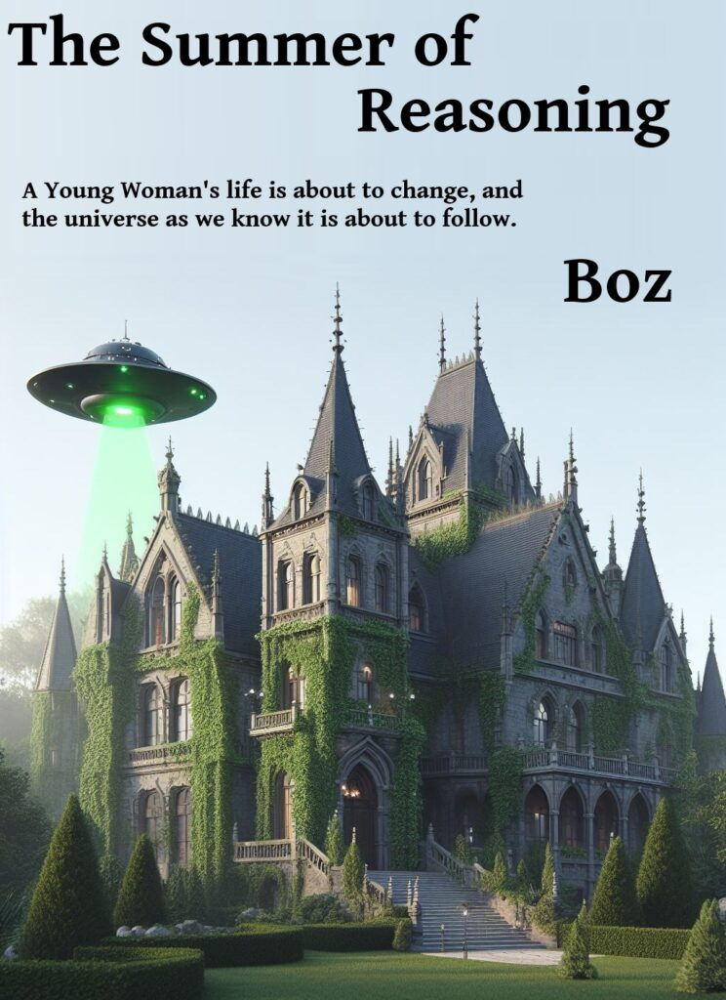
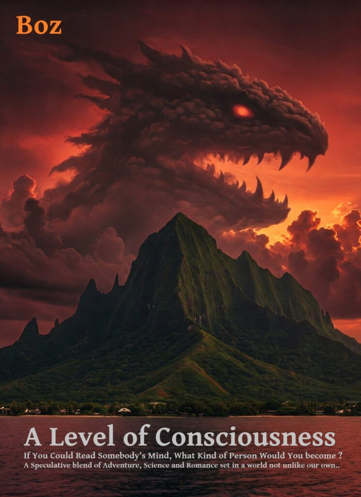

Marketing. You know, selling your product to the people. Well the consensus is in, I suck at it. Yet another person has approached me and let me know that the covers for my books suck and really don’t reflect the content. Also, and I guess more importantly, they were in the wrong categories. Something I thought I’d fixed.
Now I freely admit, this marketing and selling stuff is the bit I really suck at, and I have for once decided to take a bit of advice from friends about it to update the blurb, categories and make some shiny new covers.
The Summer of Reasoning

Meet the new cover for the eBook. If you have read the book, the new cover will hopefully make a lot more sense to you than the old, the old cover was dark and mysterious, but as many have pointed out, the book is not dark not mysterious, but one of an optimistic future. I have also reduced the price to a more affordable $0.99 which with the new cover may make it a more compulsive buy. It is still available on most of the publishing sites except for Amazons kindle store while I figure out how to re-categorise it and whether to split it into three like the paperback versions. It is likely I will split the ePub into 3 books also and probably give the first one away for free. Watch this space.
A Level of Consciousness

Here the opposite is true, the original cover was far too mellow and probably hyped the romantic elements in the book more than it should have, unfortunately the ending certainly would have curdled most of that genre’s readers if they made it that far. So the cover is now much darker and depicts a scene near the end of the book not the beginning.
I will revisit the $2.99 price of A Level of Consciousness once I release my next novel, (no spoilers though!). Friends and anyone who gets past my email spam filters can of course read both books for free, just by dropping me an email.
I am also looking into getting the paperback covers changed too. Book covers change all the time so it is not a big thing.